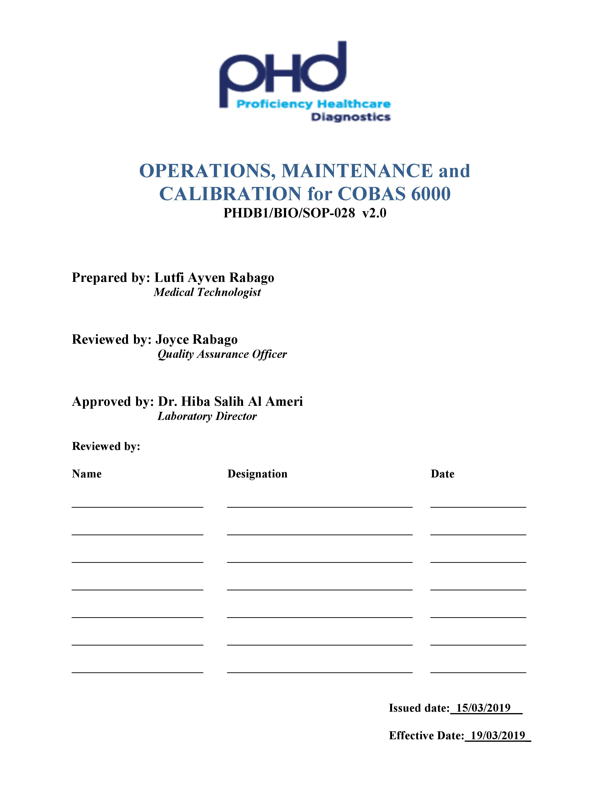

- Cobas 6000 is a fully automated, computerized chemistry analyzer. It has 2 modules : e601 and c501. Cobas 6000 is intended for in vitro quantitative or qualitative determination of a wide range of analytes in various body fluids such as classical chemistry, electrolytes, specific proteins, therapeutic drug monitoring, drugs of abuse, and hormone testing which are consolidated into one system with two reagent cassette design.
OPERATIONS, MAINTENANCE and CALIBRATION for COBAS 6000
- PURPOSE
- PRINCIPLE
- The c 501 module comprises a photometric unit and an ISE unit (for ion-selective electrode [ISE] determinations).
- The e 601 module is a multi-test immunoassay analyzer with random access with a capacity of up to 170 tests per hour. The cobas® 6000 analyzer series can be configured with up to two e 601 modules.
- 2.3. The graphical user interface provides quick and easy access to sample, control, and calibration data, while continuously monitoring all system functions. Color-coded icons alert the user to changes in the system status. Connection to the host system allows for automatic transfer of results to and from the analyzer.
- COMPUTER PROGRAMS
- Microsoft
- PCS Labcare
- RESPONSIBILITIES
- All the staff trained and authorized in the Department of Biochemistry.
- Laboratory Director
- Quality Officers
- AUTHORITY
- Laboratory Director
- Managing Director
- Operations Manager
- ABBREVIATIONS and DEFINITIONS
- PHDB1 –Proficiency Healthcare Diagnostics Branch 1
- QAD - Quality Assurance Department
- LAB – Laboratory
- BIO - Biochemistry
- SOP – Standard Operating Procedure
- N/A – not applicable.
- FIL – File
- FOR – Form
- STD – Standard
- QC – Quality Control
- BOD – Begin of Day
- FORMS and FILES
- Forms
- Files
- PHDB1/BIO/FIL-05: COBAS 6000 Equipment Validation File.
- PHDB1/BIO/FIL-04: COBAS 6000 Operation, Maintenance, Calibration, and Error Log File.
- PHDB1/BIO/FIL-09: COBAS 6000 LJ Charts.
- SPECIMENS
- Refer to individual test listings
- MATERIALS
- Equipment and reagents required as per individual test SOP.
- SAFETY PRECAUTIONS
- Do not remove any cover of the instrument, other than specified in the Operator’s Manual.
- Do not open the top cover and touch the ultrasonic mixing unit during operation or when the analyzer performs maintenance.
- Be sure to wear protective equipment.
- If any biohazardous material is spilled, wipe it up immediately and apply disinfectant.
- If waste solution comes into contact with your skin, wash it off immediately with water and apply a disinfectant. Consult a physician.
- Do not touch the cooling fan during operation
- Before cleaning the fan, be sure to shutdown the instrument.
- Before starting operation or maintenance, be sure to close and lock the top cover.
- Observe the cautions given on the bottles and cassettes and the instructions for use
- Refer to the safety precautions given in the PHDB1 Safety Manual.
- PROCEDURES
- The analyzer can be started manually or automatically. The analyzer (c 501, e 601, and control unit) performs initialization and then enters standby mode ( time approximately 12 min).
- To automatically start up the analyzer:
- The analyzer can be programmed to start up automatically. If the analyzer was put in sleep mode at the end of the previous working session and a wake-up time was set.
- The analyzer starts up automatically at the set time. While the analyzer is performing initialization, the log-on screen is displayed.
- Enter your Operator ID and password to log on.
- Choose OK to gain access to the software and begin operation. When initialization is completed, the analyzer goes into standby.
- To manually start up the analyzer:
- on the operation power switch, located on the left side of the rack sampler unit.
- Switch on each power switch of the computer, printer, and monitor.
- Enter your Operator ID logon and password to log on.
- Choose OK to gain access to the software and begin operation. When initialization is completed, the analyzer goes into standby.
- To automatically start up the analyzer:
- Check Systems Alarm:
- If an alarm was issued, the Alarm global button flashes. In this case, it is necessary to open the Alarm screen to view the alarm. The Alarm screen identifies any system alarm conditions.
- Choose Alarm (global button) to display the Alarm screen.
- Select each alarm to view the description and remedies (displayed in the lower half of the screen).
- Correct any alarm conditions by following the remedies.
- Choose Close to close the Alarm screen.
- Print reagent load list:
- Choose Reagent Preparing on the System Overview screen.
- Choose Reagent Load List on the Reagent Preparing window. A confirmation window appears.
- Choose Yes to print the Reagent Load List/Unload List.
- To replace ISE IS or ISE Dil:
- Remove the empty bottle from the position where the green indicator lamp lights up.
- Place a new bottle into the reagent position. Reagent registration is performed automatically when a new bottle is placed.
- To load a cobas c pack:
- Fold the cassette table at the front of the c 501 module downward to get access to the cassette loading port.
- Place the cobas c pack right in front of the loading port with its barcode label facing to the right.
- Slide the cobas c pack all the way into the loading port until you sense a resistance.
- To load cobas e packs:
- Make sure, that the system is in standby.
- Lift off the lid of the reagent disk.
- Place the required reagents in the reagent disk. Ensure that the cobas e packs are placed in the reagent disk in the correct orientation.
- Close the lid of the reagent disk. A reagent scan is activated and the Reagent Overview window (System Overview > Reagent Overview) is updated.
- To load patient samples:
- Prepare sample racks with the correct color and rack numbers according to sample types (erum, Urine, Plasma, Supernatant).
- For all routine samples use gray racks.
- To verify the correct rack numbers for each sample type refer to the Rack Assignment area on the Utility > System screen.
- Place the samples in the prepared sample racks. Ensure the sample barcodes are facing the open slot in the rack so the barcode reader can scan them.
- Place the routine sample racks onto a rack tray in the correct orientation: The barcode labels of the sample racks have to be on the right side when placing the tray into the rack loader. The rack loader is on the left side.
- Before starting a run, ensure that all test selections have been made and all necessary samples, calibrators, and controls have been loaded.
- Choose Start (global button).
- Verify the settings on the Start Conditions screen.
- Choose Start (on the Start Conditions screen). The analyzer performs preparation routine and then begins to process the samples.
- Test selection for STAT samples is the same as for routine samples. That is, test selections for samples are downloaded from the Host in realtime but can still be changed from the analyzer’s control unit.
- To load STAT samples:
- Prepare sample racks with the correct color and rack numbers according to sample types.
- Set the samples in the prepared sample racks. Ensure the sample barcodes are facing the open slot in the rack so the barcode reader can scan them.
- Place the STAT rack in the STAT port carefully observing its correct orientation.
- Checking results:
- As results are generated on the instrument, they are saved in the database located on the internal hard disk of the control unit. When all results for all the tests requested for a sample are available, the analyzer sends them to the Host where they can be validated.
- To view or edit results on the analyzer, use the Workplace > Data Review screen; all test results in the database are displayed here.
- To activate the automatic rerun function:
- Verify the settings of the Automatic Rerun check box on Utility > Application > Range.
- Choose Start (global button).
- Choose Change in the Automatic Rerun area.
- Choose the Routine check box, Stat check box, or both to process reruns without operator intervention. Routine and STAT reruns are selected separately.
- Shutting down the analyzer:
- Choose Shut Down (global button) to display the Shut Down window.
- Select the Shut Down option, choose Execute and confirm the shutdown.
- Wait until the computer power supply turns off. Then, switch off the power switch of the printer and monitor.
- Maintenance
- Maintenance/Service Actions must be performed to ensure that the instrument runs reliably.
- Use the Service work area to track and perform service actions. When any service action is due, the Service icon on the navigation bar turns yellow.
- Generally, the instrument must be in Standby when you are performing service actions.
- To access the Service work area, click the Service button on the navigation bar. The Service work area has the following tabs:
- Due:This tab lists service actions that are nearly due or overdue.
- All:This tab lists all the service actions.
- Begin Of Day:This tab lists service actions that are to be automatically performed at the Begin of Day.
- Select the service action to be performed and click Perform. The service action dialog box is displayed.
- Follow the instructions listed on the dialog box to perform the service procedure.
- Listed below are the Maintenance tasks to be performed daily, weekly, monthly, or on annual basis:
- Cobas c501
- Daily:
- Clean : sample probe & shield pipe
- ISE sipper probe
- Reagent Probes
- Cell Rinse nozzles
- Drain port
- Perform Daily Pipe
- Photometer check reading at 340 nm (Reading < 14000).
- Weekly:
- Clean Cell Covers
- Clean Rinse Stations
- Clean IS bath
- Perform Weekly Pipe
- Monthly maintenance:
- Clean incubation water bath
- Clean KCI aspiration filter
- Clean detergent aspiration filters
- Clean circuit board rack filter
- Clean power supply filter
- Clean radiator filter
- Replace reaction cells
- Every 2 months:
- Replace ISE Measuring Cartridges
- Every 6 months:
- Replace ISE pinch valve tubing
- Replace ISE Sipper tubing
- Clean Ultrasonic mixers
- Replace ISE Reference Cartridges
- Replace Syringe Seals
- Daily:
- Cobas e601:
- Daily:
- Weekly:
- Clean PC/CC reservoir fill nozzles.
- Clean PC/CC reservoir positions
- Clean Pre Clean mixer
- Pre Clean separation stations
- Clean Incubator
- Clean Assay Cup vortex mixer
- Clean microbead mixer
- Clean Rinse Station
- Replace PC/CC reservoirs
- Perform Weekly Pipe
- Every 2 weeks:
- Perform Liquid Flow Path Cleaning
- Every 3 months
- Replace pinch valve tubing
- Every 6 months
- Replace Pipettor Seals
- Daily:
- Calibration
- Calibration materials are made of high quality materials with test system and matrix.
- Causes for calibration recommendations:
- Automatic calibration at start-up of the analyzer (Start-up calibration).
- Automatic calibration at change of reagents:
- Calibration at cobas c pack or cobas e pack change
- Calibration at lot change
- Automatic calibration without reagent change:
- Calibration in regular intervals
- Calibration in combination with Preventive action
- Calibration due to failed QC
- Automatic recommendation for recalibration when a calibration failed.
- After failed calibration verification.
- Calibration procedure:
- To request calibration:
- Choose Calibration and QC Select in the Work Flow Guide area.
- Choose the buttons that are yellow in both the Calibration area and the QC area to select the suggested calibrations and controls for measurement.
- Select the list you want to print from the Load List area. Calibration comprises all requested calibrations.
- Choose Print to print the selected load list
- Load the calibrators and controls on the analyzer as directed by the Calibration Load List.
- To load required calibrators:
- Using the load list as a guide, prepare all required calibrator and control materials according to the manufacturer's instructions.
- Before placing calibrators and controls on the loader, check that no bubbles or foam are visible on the liquid surface.
- Load calibrators and controls onto the racks (calibrators onto black racks, controls onto white racks) and place the racks on the loader.
- Two or more calibrator racks are to be measured as one group, so do not put other racks between them. When you carry out QC after calibration, QC racks have to follow calibrator racks directly. Do not set other racks with the calibrator and QC racks.
- To request calibration for a test manually:
- Choose Calibration > Status.
- Select the test and reagent (Current or SB) that needs to be calibrated from the list.
- Select the appropriate button in the Method area for a Blank, 2 Point, Full, or Span calibration.
- Choose Save to save the changes.
- Load required calibrators.
- To review calibration data:
- Choose Calibration > Status.
- Select a photometric test from the list on Calibration > Status.
- Choose Calibration Result to display the Calibration Result window.
- In order to review the results of previous calibrations of the selected test, choose Calibration Trace.
- Choose Calibration Result to display the Calibration Result (ISE) window to review ISE calibration.
- Select an e 601 test from the list on Calibration > Status, Choose Calibration Result to display the Calibration Result window to review calibration of e601 analyte calibration.
- Choose Calibration Trace to open the Calibration Trace window for previous calibration reports.
- To measure calibrators:
- Choose Start (global button).
- Choose Start on the Start Conditions screen. The Start screen closes and the calibration and control run begins.
- Validating calibration results.
- Failed or newly recommended calibration is indicated on the System Overview screen by the Calibration and QC Select button turning yellow.
- Information on the status of the calibrators that are currently processing can be viewed on the Workplace > Calib. Review screen
- If a calibration fails or a QC result falls out of the expected range, check for data alarms on the Workplace > Calib. Review screen or on the printouts.
- To request calibration:
- Quality Control:
- Regularly perform QC measurements to continually monitor the instrument performance. After measurement of QC samples, data can either be transferred to and processed on a Host or they can be processed on the analyzer.
- Working in barcode or non-barcode mode:
- On the Utility > System screen under Barcode Setting, you can verify or change whether the system uses barcodes for controls or not.
- When working with barcodes, controls are automatically identified.
- In case controls are processed in non-barcode mode, it is necessary to assign a rack number and rack position for each control.
- The current rack assignment is listed on the QC > Control screen. To provide additional assignments or remove existing assignments choose Rack Assignment. Be sure to use the specified racks and positions. A misplacement would go undetected by the system and yield completely invalid results.
- Do not use barcoded controls on a QC rack that is assigned for non-barcoded controls.
- Requesting QC measurements:
- To perform controls for active reagents:
- On QC > Status select the module where the QC is to be performed from the Module box.
- If routine QC is to be performed, choose Routine QC to select all tests that are currently loaded on the system and activated for QC. If individual tests are to be selected, go to step 3.
- Choose the appropriate test, control and measuring channel, if applicable. Multiple tests, controls and measuring channels can be highlighted.
- Choose Select. A blue bar appears in the Selection column. Manual is displayed in the Cause column. The Select button toggles to Deselect.
- Choose Save to request the selected controls for measurement.
- Print a QC load list and load controls onto the system.
- To perform controls for standby reagents:
- On QC > Status choose Stand By Bottle QC to display the Stand By Bottle QC window.
- Select the appropriate test, control, and measuring channel if applicable. Multiple tests, controls, and measuring channels can be highlighted.
- Choose Select. A blue bar appears in the Selection column. Manual is displayed in the Cause column.
- The Select button toggles to Deselect
- Choose OK to request the selected controls for measurement.
- Print a QC Load List and load controls onto the system.
- To perform controls for active reagents:
- To review quality control results and statistics:
- QC > Run Status:
- This shows an overview of the last 500 quality control measurements performed on the analyzer or to view the most recent QC measurements for one particular test.
- Use the "Test" box to select all tests or one specific test to be displayed on the chart.
- The "Run Status" screen consists of a details area in which you will find the control name, the lot number of control and reagent, the test and position and status of reagent, the module, date and time of the run, the limits, results and units.
- QC > Individual:
- The "Individual" screen lists all non-accumulated QC results.
- It also displays details on each tests control, reagent and control lots, the target mean and SD, the number of QC runs carried on the control since last accumulation, the calculated mean and SD, the CV% and most recent control result.
- You can also open the "Chart" screen to open individual QC chart window and exclude some qc runs.
- .
- To exclude an individual QC point and add a comment:
- Select the QC point to be excluded from QC calculations.
- Choose Comment on the Individual QC Chart window to display the Comment window.
- If necessary type a comment (max. 20 characters) in the Comment box.
- Choose Exclude. The window is closed after confirmation.
- Choose OK.
- To exclude an individual QC point and add a comment:
- QC > Run Status:
- To accumulate QC data:
- Select the data to be accumulated from the list on the QC > Individual screen.
- Choose Accumulate
- If Mean-R is set as accumulation method, go to step 4.
- In the confirmation window choose Yes to accumulate the selected data.
- After accumulation the corresponding data are deleted from the QC > Individual screen and a new standard deviation (SD) and mean value is calculated and displayed on QC > Cumulative.
- To assign a control to a specific rack and position:
- On QC > Control choose Rack Assignment.
- On the Rack Assignment window select the control from the list on the left and an unassigned rack number and position from the list on the right.
- Choose Add to register the new assignment.
- To remove an existing assignment select the concerned rack number and position from the list on the right and choose Remove.
- Choose OK to save the changes and close the window.
- To download control data from cobas link:
- On the QC > Install screen choose Download.
- In the Search Using area select a search option.
- Choose Search to start searching for the selected criteria.
- Select the check box(es) in the Selection column to download the necessary control information and choose Download.
- Confirm the message on the confirmation windows to start the download.
- To add controls manually:
- Select a blank line from the control list on the QC > Install screen.
- Choose Add.
- Type all necessary data in the Add Control window
- Choose OK. The new control appears on the control list. To run control tests with the newly installed controls, it is necessary to manually enter the target values for each test and then to activate these tests.
- Choose Edit to enter target mean, target SD, and confidence limits if necessary Then choose Active Test to activate the tests for the new control.
- To edit control values:
- On the QC > Install screen choose the name of the control to be edited in the Control list on the left-hand side of the screen.
- Choose Edit to display the Edit Control window.
- Select the test to be edited from the list.
- Type the new target mean and SD (standard deviation) values, cumulative and individual, in the appropriate text boxes.
- Choose Calculate to recalculate the confidence limits on the basis of the edited target and SD values and the QC violation rule (set under Utility > Application > Calib.).
- Choose Update to update the window.
- Repeat steps 3 to 6 for all tests assigned to this control that need to be edited.
- Choose OK to save the changes and close the Edit Control window.
- To reassign control values for c 501 via download:
- Download the control values for controls that need to be reassigned.
- To activate control tests:
- On the QC > Install screen choose the appropriate control name in the list box on the left side of the screen.
- Choose the test to be activated in the list on the right of the screen
- Choose Activate Test. The test name highlights in green when the test is activated.
- Repeat step 2 and 3 for all tests to be activated for that control.
- DOWNTIME PROCEDURES
- In case PCS LAB CARE is down, use the downtime form for Biochemistry in reporting results.
- In case the test cannot be done, such as in failed QC, unavailability of reagents or consumables, or prolonged instrument downtime, the sample will be sent to PHD-AUH.
- REFERENCES
